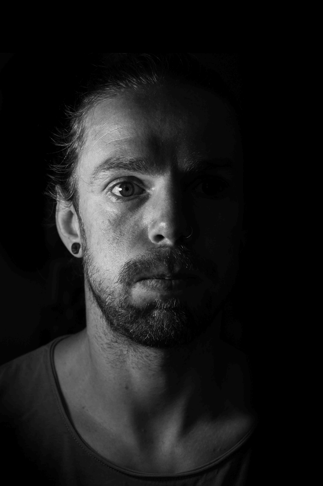

Listen to this page:
Neal works in the gap between the production of research, and how that science is reliably summarised and used in decision-making in sectors related to the environment, sustainability, and climate.
"Overwhelmed"

“Everything I read now is another record broken, another disaster, seeing something we never thought we would see in the near future. I find this too much to deal with sometimes, it's overwhelming. It's especially hard to care about the small things in life when you know there is and will be so much suffering on the planet: what have we done...?”
"Disappointed"

This is not where he thought we would be now - we should have done more. He explains that it was clear to him that things were bad when he was younger, and that pushed him to work in conservation so he could make a difference. People know more now, he says, but it feels like little has changed. “When you’re up against capitalism and public and political inertia it’s hard to feel like your small piece of the puzzle is having any impact at all.”
"Guilty"

He says he is scared about how we and future generations will cope with all the problems that have been knowingly swept under the carpet for decades. “It’s hard to see how things won’t get a lot worse for some people, and I feel guilty that I haven’t been able to do more. I feel impotent.”
“Do I feel hope? I don't know. Hope seems very passive. We're beyond hope, thoughts and prayers. We need to drastically change how we live. Can you hope for that?” It's possible, but we have to do so much more than hope, he says.

Visit the project website